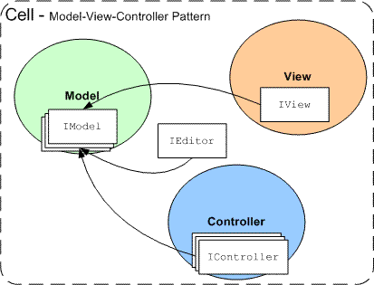
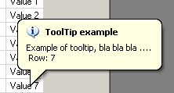

Lib Version: 4.30
Doc Version: 2.3
SourceGrid is a .NET Windows Forms grid control written entirely
in C# with managed code. SourceGrid can be used to visualize or to
change data in a table format.
SourceGrid con be used bound to a
data source (typically a DataView) or creating each cell directly.
There are a lot of controls of this type available, but often are
expensive, difficult to customize or too DataSet oriented.
SourceGrid use only managed code (without API or Interop) and can
be used with any .NET 2 compatible environments.
In this article I want to supply an overview of the utilization
and functionalities of the SourceGrid control. For details on the
classes, properties or methods you can consult the documentation in
CHM format or the example project in the ZIP file.
For more
information, a discussion forums, bug tracker system or to download
the latest release go to the CodePlex page:
http://sourcegrid.codeplex.com/.
Latest source code: http://bitbucket.org/dariusdamalakas/sourcegrid/
You can get a very good view of what is capable SourceGrid of by looking at the examples in SourceGrid.Examples application.
To use SourceGrid you must have a .NET 2 compatible development
environment (like Visual Studio 2005).
Download the latest
release from http://www.codeplex.com/sourcegrid/.
Unzip the file and reference from your project these assemblies:
SourceGrid.dll - SourceGrid core library
Typically I suggest to always copy in the same location the *.xml files that you can find in the same directory of the assemblies to use the IDE IntelliSense features.
Open the form where you want to add the grid control, open the IDE ToolBox, right-click and select "Choose Items...". Browse and add SourceGrid.dll assembly on the IDE ToolBox.
This assembly is required by the runtime that you must redistribute with your application to the end-user.
There are 2 main controls inside the SourceGrid.dll assembly:
GridVirtual - A grid
of virtual cells (ICellVirtual).
Grid - A grid of real cells (ICell).
There are therefore two fundamentally distinct objects: virtual cells and real cells. Virtual cells are cells that determine the appearance and the behaviour of the cell but don't contain the value. The real cells have the same properties as virtual cells but also contain the value of the cell, and are therefore associated to a specific position in the grid.
You can use the Grid control for any kinds of grid
where you don't need to display large amounts of cells (typically
less than 50.000 cells). If you have to display large amount of cells
you must usually use a GridVirtual derived controls, see
the next chapters for more information.
Typically in this article
I will use the Grid control because is more simply to
use especially for simply examples. But consider that basically the
same code can be used also for GridVirtual.
The Grid
is also used if you have unusual grids that require maximum
flexibility.
Drag the Grid control inside your forms as any other .NET control and start using it.
For now SourceGrid has a poor design time support, so usually you
must write manually the code to manipulate the grid.
Suppose that
you have a Grid control named grid1 you can
write this code in the Form.Load event:
grid1.BorderStyle = BorderStyle.FixedSingle;
grid1.ColumnsCount = 3;
grid1.FixedRows = 1;
grid1.Rows.Insert(0);
grid1[0,0] = new SourceGrid.Cells.ColumnHeader("String");
grid1[0,1] = new SourceGrid.Cells.ColumnHeader("DateTime");
grid1[0,2] = new SourceGrid.Cells.ColumnHeader("CheckBox");
for (int r = 1; r < 10; r++)
{
grid1.Rows.Insert(r);
grid1[r,0] = new SourceGrid.Cells.Cell("Hello " + r.ToString(), typeof(string));
grid1[r,1] = new SourceGrid.Cells.Cell(DateTime.Today, typeof(DateTime));
grid1[r,2] = new SourceGrid.Cells.CheckBox(null, true);
}
grid1.AutoSizeCells();
As you can see you can use the grid like a 2 dimension array. In the
previous code I have set the grid border, the number of columns, the
number of fixed rows and created the first header row. For the header
I have used a ColumnHeader cell. With a simple loop I
have created the other cells using a specific type for each column.
The Cell class automatically creates an appropriate
editor for the type specified (in this case a TextBox and a
DateTimePicker). For the last column I have used a CheckBox
cell that allows the display of a checkbox directly in the cell. Each
kind of cell defines its own visual aspect and behaviour.
The
form should look like the one in the following picture.

The grid created supports sorting, column sizing and editing of the cells.
Here some other important features:
If you want to read or change the
value of a cell you can use the grid1[r,c].Value
property where r and c are the row and column of the cell.
To remove a row you can write
grid1.Rows.Remove(r)
To change the width of a column you can write
grid1.Columns[c].Width = 100
If you want to change some visual properties of the cell you must
use the View class.
Let's see another example:
grid1.BorderStyle = BorderStyle.FixedSingle;
grid1.ColumnsCount = 3;
grid1.FixedRows = 1;
grid1.Rows.Insert(0);
SourceGrid.Cells.Views.ColumnHeader boldHeader = new SourceGrid.Cells.Views.ColumnHeader();
boldHeader.Font = new Font(grid1.Font, FontStyle.Bold | FontStyle.Underline);
SourceGrid.Cells.Views.Cell yellowView = new SourceGrid.Cells.Views.Cell();
yellowView.BackColor = Color.Yellow;
SourceGrid.Cells.Views.CheckBox yellowViewCheck = new SourceGrid.Cells.Views.CheckBox();
yellowViewCheck.BackColor = Color.Yellow;
grid1[0, 0] = new SourceGrid.Cells.ColumnHeader("String");
grid1[0, 0].View = boldHeader;
grid1[0, 1] = new SourceGrid.Cells.ColumnHeader("DateTime");
grid1[0, 1].View = boldHeader;
grid1[0, 2] = new SourceGrid.Cells.ColumnHeader("CheckBox");
grid1[0, 2].View = boldHeader;
for (int r = 1; r < 10; r++)
{
grid1.Rows.Insert(r);
grid1[r, 0] = new SourceGrid.Cells.Cell("Hello " + r.ToString(), typeof(string));
grid1[r, 0].View = yellowView;
grid1[r, 1] = new SourceGrid.Cells.Cell(DateTime.Today, typeof(DateTime));
grid1[r, 1].View = yellowView;
grid1[r, 2] = new SourceGrid.Cells.CheckBox(null, true);
grid1[r, 2].View = yellowViewCheck;
}
I have created a column header view with a style FontStyle.Bold |
FontStyle.Underline, one view for a standard cell with a yellow
backcolor and a checkbox view always with a yellow backcolor. Then I
have assigned these instances to the View property of
each cell.
The form should look like the one in the following
picture.

You can note that I have assigned the same instance of the View
class for many cells. This is useful to optimize the resources used.
Each cell can have an editor (Editor property)
associated. The editor is used to edit the cell value. You can
manually create an editor class (see SourceGrid.Cells.Editors
namespace) or use the SourceGrid.Cells.Editors.Factory
class to create an editor based on a Type. You can also
use the Cell constructor that automatically calls
SourceGrid.Cells.Editors.Factory if you specify the Type
parameter.
Here an example that creates some cells and the
editors associated using one of the methods described.
//A DateTime editor
grid1[r, c] = new SourceGrid.Cells.Cell(DateTime.Today, typeof(DateTime));
//A string editor
grid1[r, c] = new SourceGrid.Cells.Cell("Ciao", typeof(string));
//A double editor
grid1[r, c] = new SourceGrid.Cells.Cell(58.4);
grid1[r, c].Editor = SourceGrid.Cells.Editors.Factory.Create(typeof(double));
Like the View classes also the editors can be shared
between one or more cells.
Now you can start to work with SourceGrid, for more advanced information see the chapters below.
The Grid control is the ideal if you want the
greatest flexibility and simplicity but without many cells. In fact,
in this control every cell is represented by a .NET class and
therefore occupies a specific quantity of resources. Moreover this is
the only grid that supports features of RowSpan and ColumnSpan (cells
merge).
Using the control in a Windows form is trivial. It's just like adding any other control like a Button or a DataGrid. First, create or open a Windows Application project and open a Windows Form into the designer. Now you are ready to customize the Toolbox: Right-Click the Toolbox, .NET Framework Components, Browse, select the DevAge.SourceGrid.dll. The Grid Control is now added to the Toolbox and can be inserted in Windows Form as any other control.
After inserting the control in the form we can begin to write our
code using the grid. For example in the Load event of
the form we can write this code:
grid1.Redim(2, 2);
grid1[0,0] = new SourceGrid.Cells.Cell("Hello from Cell 0,0");
grid1[1,0] = new SourceGrid.Cells.Cell("Hello from Cell 1,0");
grid1[0,1] = new SourceGrid.Cells.Cell("Hello from Cell 0,1");
grid1[1,1] = new SourceGrid.Cells.Cell("Hello from Cell 1,1");
The previous code creates a table with 2 lines and 2 columns (Redim
method) and populates every position with a cell. I have used the
SourceGrid.Cells namespace which contains the definition
for real cells.
To read a specific value of the grid you can use the value
property of the cell like this: object val = grid1[1,0].Value;.
See the other chapters for more information.
The GridVirtual control is ideal when it is necessary
to visualize a lot of cells and you already have available structured
data like a DataSet, an Array, a document
XML or other data structure.
This type of grid have the same
features of the Grid control except for the automatic
sort (this because the grid cannot automatically order any external
data structure without copying its content) and the feature of
RowSpan and ColumnSpan that allows spanning of a cell across other
adjacent cells.
Another disadvantage is that creating a virtual
grid is a little more difficult.
The main concept in a virtual grid is that each cell reads and
writes its value from an external data structure and the grid doesn't
maintain all the rows and columns but are normally read directly from
the data source. This idea was implemented with an abstract
GridVirtual class and with the abstract methods
CreateRowsObject, CreateColumnsObject and
GetCell. Then you can use a special IValueModel
to read the values directly from the data source.
To use
GridVirtual it is therefore necessary to create a class
that derives from GridVirtual and personalize the
reading of the data source overriding CreateRowsObject,
CreateColumnsObject and GetCell methods.
The purpose of the method GetCell is to return, for
a given position (row and column), the chosen cell, the methods
CreateRowsObject and CreateColumnsObject
are used to create the columns and the rows objects for the used data
source. This allows great flexibility because you can return any
ICellVirtual for a specific type; for example you could
return a cell of type header when the row is 0.
Usually you don't need to use directly the GridVirtual
but one of the derived controls. For now I have implemented two
controls that directly use the virtual grid features:
DataGrid - A grid
bound to a DataView object.
ArrayGrid - A grid bound to an Array object.
If you want to create your custom control to read from a specific
data source you can see ArrayGrid class for an example.
Every cell is composed of four fundamental parts based on a modified Model-View-Controller pattern:
Model : The Model is
the class that manages the value of the cells. It contains the
values or properties associated and is accessible by the other
components.
View : The View is
the class that draws the cell and contains the visual properties.
Controller : The
Controller is the class that supplies the behaviour of the cell.
Editor : The Editor is the class used to
customize the editor of the cell.

This subdivision grants great flexibility and reusability of code,
saves time and supplies a solid base for every type of customization.
For the more common cases there are some classes already arranged
and configured, but with a few lines of code is possible to create
personalized cells (see the next paragraphs for the details).
The main components of a grid are the rows and the columns. To manipulate this information, SourceGrid supplies 2 properties:
Rows - Manages the
rows information, the base class is the RowsBase class.
Columns - Manages the columns information, the
base class is the ColumnsBase class.
When using a real grid the base classes are extended with the
RowInfoCollection and the ColumnInfoCollection.
These are collection of RowInfo and ColumnInfo
classes. When using a virtual grid you must extend the base classes
with your custom code to provide information of your data source.
NOTE: Only valid for real grid.
These are some of the RowInfo class properties:
Height, Top, Bottom, Index,
Tag. In contrast, these are the properties of the
ColumnInfo class:Width, Left,
Right, Index, Tag.
There are many ways to create rows and columns:
grid1.Redim(2,2);
grid1.RowsCount = 2;
grid1.ColumnsCount = 2;
grid1.Rows.Insert(0);
grid1.Rows.Insert(1);
grid1.Columns.Insert(0);
grid1.Columns.Insert(1);
These three examples perform all the same task of creating a table with 2 rows and 2 columns.
To change the width or the height of a row or a column you can use this code:
grid1.Rows[0].Height = 100;
grid1.Columns[0].Width = 100;
The properties Top, Bottom, Left
and Right are automatically calculated using the width
and the height of the rows and columns.
After allocating the rows and columns, you must create for each position of the grid the required cells, like this code:
grid1.Redim(2,2);
grid1[0, 0] = new SourceGrid.Cells.Cell("Cell 0, 0");
grid1[1, 0] = new SourceGrid.Cells.Cell("Cell 1, 0");
grid1[0, 1] = new SourceGrid.Cells.Cell("Cell 0, 1");
grid1[1, 1] = new SourceGrid.Cells.Cell("Cell 1, 1");Namespace: SourceGrid.Cells.Models
The purpose of the Model classes is to separate the
data in the cells from the cell object. This separation is used for
two main reasons:
To implement virtual grid, where
the values are stored only in the original data source. In this case
the Model, if implemented in the right way, reads the
data directly from the data source.
To extend the cells classes but maintaining an easy
reusability of the code. This is because you don't have to change
the base Cell class to add new features, but you can
simply add a new Model.
Every cell has a property Model that gets or sets a
ModelContainer object. This class is a collection of
IModel interface. Each IModel interface
contains all the properties used for a specific feature.
The main Model is the ValueModel which
contains the value of the cell, but there also other models and you
can crate your custom models. Here are the default models:
IValueModel
IToolTipText
ICheckBox
ISortableHeader
Each of these models contains the properties specified for each
features, for example the IToolTipText contains the
ToolTipText string.
Each cell has a collection of models to allow using many features on a single cell.
Usually using real cell you can use a model that simply implement the right interface storing directly the required data; using virtual grid you can implement the interface to bind the values directly to an external data source.
Namespace: SourceGrid.Cells.Views
Every cell has a property View to gets or sets an
interface of type IView. The cell uses this interface to
draw and to customize the visual properties of the cell.
The purpose of the View is to separate the drawing
code from the rest of the code and allows sharing of the same visual
properties between cells. In fact the same instance of View
can be used on many cells simultaneously thus optimizing the use of
the resources of the system.
These are the default View classes in the namespace
SourceGrid.Cells.Views:
SourceGrid.Cells.Views.Cell
- Used for classic cells. In this view you can customize the
colours, the font, the borders and a lot other properties.
SourceGrid.Cells.Views.Button
- Used for a cell with a button style with theme support.
SourceGrid.Cells.Views.Link
- Used for a cell with a link style.
SourceGrid.Cells.Views.CheckBox*
- Used for checkbox style cells. The checkbox can be selected,
disabled and can contain a caption.
SourceGrid.Cells.Views.Header*
- Used for a generic header cell.
SourceGrid.Cells.Views.ColumnHeader*
- Used for a column header cell with theme support.
SourceGrid.Cells.Views.RowHeader
- Used for row header cell with theme support.
SourceGrid.Cells.Views.MultiImages - Allows the
drawing of more than one image in the cell.
*The View marked with an asterisk
requires special components to work correctly, for example the
CheckBox view needs an ICheckBox
Model.
Some of the previous classes contain one or more static properties with some convenient default instances.
This code shows how to create a View class, change
some properties and assign it to more cells previously created:
SourceGrid.Cells.Views.Cell view = new SourceGrid.Cells.Views.Cell();
view.BackColor = Color.Khaki;
grid1[0,0].View = view;
grid1[2,0].View = view;
With some line of code you can create your custom View,
in this case I suggest deriving your class from Cell,
which already has implemented some default methods. In the following
code example I create a View that draws a red ellipse
over the cell:
public class MyView : SourceGrid.Cells.Views.Cell
{
protected override void DrawCell_Background(SourceGrid.Cells.ICellVirtual p_Cell,
SourceGrid.Position p_CellPosition, PaintEventArgs e, Rectangle p_ClientRectangle)
{
base.DrawCell_Background (p_Cell, p_CellPosition, e, p_ClientRectangle);
e.Graphics.DrawEllipse(Pens.Red, p_ClientRectangle);
}
}
To use this new View in a cell use this code:
MyView myView = new MyView();
//...... code to populate the grid
grid1[r, c].View = myView;Namespace: SourceGrid.Cells.Controllers
Every cell has a property Controller that gets or
sets a ControllerContainer object. This class is a
collection of IController interface. Each IController
interface can be used to extend the behaviour of the cell using many
events like Click, MouseDown, KeyPress, ...
These are the default classes:
SourceGrid.Cells.Controllers.Cell
- Common behaviour of a cell.
SourceGrid.Cells.Controllers.Button
- A cell that acts as a button.
SourceGrid.Cells.Controllers.CheckBox*
- A cell with a behaviour of a CheckBox. (need ICheckBox
Model)
SourceGrid.Cells.Controllers.ColumnFocus
- Used to set the focus on the column when clicking the header cell.
SourceGrid.Cells.Controllers.ColumnSelector
- Used to set select the column when clicking the header cell.
SourceGrid.Cells.Controllers.CustomEvents
- Exposes a list of events that you can use without creating a new
Controller.
SourceGrid.Cells.Controllers.FullColumnSelection
- Used to enable the columns selection mode.
SourceGrid.Cells.Controllers.FullRowSelection
- Used to enable the rows selection mode.
SourceGrid.Cells.Controllers.MouseCursor
- Used to display a mouse cursor over the cell.
SourceGrid.Cells.Controllers.MouseInvalidate
- Used to invalidate the cell area when receiving a mouse event.
SourceGrid.Cells.Controllers.Resizable
- Used to create a resizable cell, for both width and height.
SourceGrid.Cells.Controllers.RowFocus
- Used to set the focus on the row when clicking the header cell.
SourceGrid.Cells.Controllers.RowSelector
- Used to set select the row when clicking the header cell.
SourceGrid.Cells.Controllers.SortableHeader*
- Used to create a sortable column header cell. (need a
ISortableHeader Model)
SourceGrid.Cells.Controllers.ToolTipText*
- Used to create a cell with a ToolTip. (need IToolTipText
Model)
SourceGrid.Cells.Controllers.Unselectable - Used
to create an unselectable cell.
*The Controller marked with an
asterisk need special models to complete their tasks.
Some of the previous classes contain one or more static properties
with some convenient default instances.
Here the list of events
that can be used inside a Controller:
Mouse: OnMouseDown,
OnMouseUp, OnMouseMove, OnMouseEnter,
OnMouseLeave
Keys: OnKeyUp,
OnKeyDown, OnKeyPress
Click: OnDoubleClick,
OnClick
Focus: OnFocusLeaving,
OnFocusLeft, OnFocusEntering,
OnFocusEntered, CanReceiveFocus
Cell Value: OnValueChanging,
OnValueChanged
Edit: OnEditStarting, OnEditStarted,
OnEditEnded
With some line of code you can create your custom Controller,
in this case I suggest deriving your class from ControllerBase,
which already have implemented some default methods. In the following
code example I create a Controller that changes the
backcolor of the cell when the user moves the mouse over it:
public class MyController : SourceGrid.Cells.Controllers.ControllerBase
{
private SourceGrid.Cells.Views.Cell MouseEnterView = new SourceGrid.Cells.Views.Cell();
private SourceGrid.Cells.Views.Cell MouseLeaveView = new SourceGrid.Cells.Views.Cell();
public MyController()
{
MouseEnterView.BackColor = Color.Green;
}
public override void OnMouseEnter(SourceGrid.CellContext sender, EventArgs e)
{
base.OnMouseEnter (sender, e);
sender.Cell.View = MouseEnterView;
sender.Grid.InvalidateCell(sender.Position);
}
public override void OnMouseLeave(SourceGrid.CellContext sender, EventArgs e)
{
base.OnMouseLeave (sender, e);
sender.Cell.View = MouseLeaveView;
sender.Grid.InvalidateCell(sender.Position);
}
}
To use this new Controller in a cell use this code:
MyController myController = new MyController();
//...... code to populate the grid
grid1[r, c].AddController(myController);You can also add a controller to the whole grid to apply the same controller to all the cells:
grid1.Controller.AddController(new MyController());
Consider for example the Controller below that open a messagebox each time a user click on a cell:
class ClickController : SourceGrid.Cells.Controllers.ControllerBase
{
public override void OnClick(SourceGrid.CellContext sender, EventArgs e)
{
base.OnClick(sender, e);
object val = sender.Value;
if (val != null)
MessageBox.Show(sender.Grid, val.ToString());
}
}
You can add this controller to all the cells with this code:
grid1.Controller.AddController(new ClickController());
Here another example of how to use a controller to check when the value of a cell change, using the OnValueChanged event:
public class ValueChangedEvent : SourceGrid.Cells.Controllers.ControllerBase
{
public override void OnValueChanged(SourceGrid.CellContext sender, EventArgs e)
{
base.OnValueChanged(sender, e);
string val = "Value of cell {0} is '{1}'";
MessageBox.Show(sender.Grid, string.Format(val, sender.Position, sender.Value));
}
}
You can add this controller to all the cells with this code:
grid1.Controller.AddController(new ValueChangedEvent());
Each time the value of a cell change the previous controller show a messagebox with the position of the cell and the new value.
Namespace: SourceGrid.Cells.Editors
Every cell has a property Editor that gets or sets an
EditorBase object. This class is used to supply a cell
editor. If this property is null it is not possible to edit the cell.
Usually the Editor uses the Model class
to manage the necessary conversion, particularly the string
conversion (used to represent the cell value).
These are the default classes:
ComboBox - A ComboBox
editor.
DateTimePicker - A
DateTimePicker editor.
NumericUpDown - A
NumericUpDown editor.
TextBox - A TextBox
editor. This is one of the more used editors by all types that
support string conversion (string, int, double, enum,....).
TextBoxCurrency - A
TextBox editor specialized for numeric currency values.
TextBoxNumeric - A
TextBox editor specialized for numeric values.
TimePicker - A
DateTimePicker editor specialized for time values.
TextBoxUITypeEditor -
Supplies the editing of the cell of all types that have a
UITypeEditor. This is a very useful class because a lot
of types support this class: DateTime, Font, enums, and you can also
create your custom UITypeEditor.
ImagePicker - An editor that can be used to
select an image file and edit a byte[] values.
An Editor can be shared between many cells of the
same grid; for example you can use the same Editor for
every cell of a column, but always with the same grid.
Each Editor class has a property Control
that returns an instance of the Windows Forms control
used to edit the cell. You can use this instance to customize the
editor control or for advanced features.
Here some ways to create an editable cell:
Create the cell specifying the value type. In this way the
cell automatically calls a utility function,
SourceGrid.Cells.Editor.Factory.Create, which returns a
valid Editor for the type specified or null.
//String cell
grid1[0, 0] = new SourceGrid.Cells.Cell("Hello", typeof(string));
//Double cell
grid1[0, 1] = new SourceGrid.Cells.Cell(0.7, typeof(double));
Create the Editor separately and then assign it
to the cells:
//String editor
SourceGrid.Cells.Editors.IEditor editorString = SourceGrid.Cells.Editor.Factory.Create(typeof(string));
//Double editor
SourceGrid.Cells.Editors.IEditor editorDouble = SourceGrid.Cells.Editor.Factory.Create(typeof(double));
//String cell
grid1[0, 0] = new SourceGrid.Cells.Cell("Hello");
grid1[0, 0].Editor = editorString;
//Double cell
grid1[0, 1] = new SourceGrid.Cells.Cell(0.7);
grid1[0, 1].Editor = editorDouble;This method is recommended when you want to use the same editor for several cells.
Create manually the correct editor and then assign it to the cells:
SourceGrid.Cells.Editors.TextBox txtBox =
new SourceGrid.Cells.Editors.TextBox(typeof(string));
grid1[2,0].Editor = txtBox;
If you need greater control on the type of editor or there are
special requirements I suggest to manually creating the editor.
In
this case, for example, I manually create the class EditorTextBox
and then set the property MaxLength.
//String editor
SourceGrid.Cells.Editors.TextBox editorString = new SourceGrid.Cells.Editors.TextBox(typeof(string));
editorString.Control.MaxLength = 10;
//String cell
grid1[0, 0] = new SourceGrid.Cells.Cell("Hello");
grid1[0, 0].Editor = editorString;The editor can be used also to customize the format of the cell, in the code below for example I create a cell with a custom numeric format:
//Double editor
SourceGrid.Cells.Editors.TextBoxNumeric editorDouble = new SourceGrid.Cells.Editors.TextBoxNumeric(typeof(double));
editorDouble.TypeConverter = new DevAge.ComponentModel.Converter.NumberTypeConverter(typeof(double), "#,###.00");
//String cell
grid1[0, 0] = new SourceGrid.Cells.Cell(9419.3894);
grid1[0, 0].Editor = editorDouble;
I have used the TypeConverter property to customize the
conversion to and from string values. There are many other
TypeConverter available:
DevAge.ComponentModel.Converter.NumberTypeConverter
- For numeric types like double, decimal, int, float
DevAge.ComponentModel.Converter.PercentTypeConverter
- For numeric types like double, decimal and float but with percent
format.
DevAge.ComponentModel.Converter.CurrencyTypeConverter
- For Decimal and double types with currency format.
DevAge.ComponentModel.Converter.DateTimeTypeConverter
- For DateTime type.
Below another example that create a DateTime editor with a custom format:
//DateTime editor with custom format
string[] dtParseFormats = new string[] { dtFormat2 };
System.Globalization.DateTimeStyles dtStyles = System.Globalization.DateTimeStyles.AllowInnerWhite |
System.Globalization.DateTimeStyles.AllowLeadingWhite |
System.Globalization.DateTimeStyles.AllowTrailingWhite |
System.Globalization.DateTimeStyles.AllowWhiteSpaces;
TypeConverter dtConverter = new DevAge.ComponentModel.Converter.DateTimeTypeConverter(dtFormat2, dtParseFormats, dtStyles);
SourceGrid.Cells.Editors.TextBoxUITypeEditor editorDt2 = new SourceGrid.Cells.Editors.TextBoxUITypeEditor(typeof(DateTime));
editorDt2.TypeConverter = dtConverter;
grid[currentRow, 1] = new SourceGrid.Cells.Cell(DateTime.Today);
grid[currentRow, 1].Editor = editorDt2;
The following picture shows most of the editors available and some special cells (picture from Sample 3):

It is possible to create a custom Editor with custom
control or special behaviours with few lines of code.
You can
derive your custom class from EditorControlBase and
create any Windows Forms control. This is an example of an editor
that uses DateTimePicker control:
public class DateTimePicker : EditorControlBase
{
public DateTimePicker():base(typeof(System.DateTime))
{
}
protected override Control CreateControl()
{
System.Windows.Forms.DateTimePicker dtPicker =
new System.Windows.Forms.DateTimePicker();
dtPicker.Format = DateTimePickerFormat.Short;
dtPicker.ShowCheckBox = AllowNull;
return dtPicker;
}
protected override void OnChanged(EventArgs e)
{
base.OnChanged(e);
if (Control != null)
Control.ShowCheckBox = AllowNull;
}
public new System.Windows.Forms.DateTimePicker Control
{
get
{
return (System.Windows.Forms.DateTimePicker)base.Control;
}
}
protected override void OnStartingEdit(CellContext cellContext,
Control editorControl)
{
base.OnStartingEdit(cellContext, editorControl);
System.Windows.Forms.DateTimePicker dtPicker =
(System.Windows.Forms.DateTimePicker)editorControl;
dtPicker.Font = cellContext.Cell.View.Font;
}
public override void SetEditValue(object editValue)
{
if (editValue is DateTime)
Control.Value = (DateTime)editValue;
else if (editValue == null)
Control.Checked = false;
else
throw new SourceGridException
("Invalid edit value, expected DateTime");
}
public override object GetEditedValue()
{
if (Control.Checked)
return Control.Value;
else
return null;
}
protected override void OnSendCharToEditor(char key)
{
}
}
Consider that you can share the same instance of the editor with many
cells but only with a single grid control. Basically each editor is
associated with only one grid.
For large grid it is always a good
idea to share the editors, because each editor has a Windows Forms
Control associated and so it is quite heavy.
Namespace: SourceGrid.Cells
These are the default cells available:
SourceGrid.Cells.Virtual -
This namespace contains all the virtual cells that can be used with
a GridVirtual control.
CellVirtual - Base
cell for each other implementations; use for the most common type
of virtual cells.
Header - A header
cell.
ColumnHeader - A
column header cell.
RowHeader - A row
header cell.
Button - A button
cell.
CheckBox - A
checkbox cell.
ComboBox - A
combobox cell.
Link - A link style
cell.
Image - An image
cell.
SourceGrid.Cells - This
namespace contains all the real cells that can be used with a Grid
control.
Cell - Base cell for
all other implementations; use for the most common type of real
cells.
Header - A header
cell.
ColumnHeader - A
column header cell.
RowHeader - A row
header cell.
Button - A button
cell.
CheckBox - A
checkbox cell.
ComboBox - A
combobox cell.
Link - A link style
cell.
Image - An image cell.
The goal of these classes is to simplify the use of View,
Model, Controller and Editor classes. If we look at the code
of any of the cell classes we can see that these classes use these
components according to the role of the cell.
This is, for
example, the code of the cell SourceGrid.Cells.CheckBox:
public class CheckBox : Cell
{
public CheckBox(string caption, bool checkValue):base(checkValue)
{
if (caption != null && caption.Length > 0)
View = Views.CheckBox.MiddleLeftAlign;
else
View = Views.CheckBox.Default;
Model.AddModel(new Models.CheckBox());
AddController(Controllers.CheckBox.Default);
AddController(Controllers.MouseInvalidate.Default);
Editor = new Editors.EditorBase(typeof(bool));
Caption = caption;
}
private Models.CheckBox CheckBoxModel
{
get{return (Models.CheckBox)Model.FindModel(typeof(Models.CheckBox));}
}
public bool Checked
{
get{return CheckBoxModel.GetCheckBoxStatus(this, Range.Start).Checked;}
set{CheckBoxModel.SetCheckedValue(this, Range.Start, value);}
}
public string Caption
{
get{return CheckBoxModel.Caption;}
set{CheckBoxModel.Caption = value;}
}
}A cell can be selected or can have the focus. Only one cell can
have the focus, identified by the Grid.Selection.ActivePosition
property of the grid, while many cells can be selected. A cell is
selected when is present in the Selection object of the
grid.
The cell with the focus receives all the mouse and keyboard
events, while the selected cells can receive actions like copy, paste
and clear.
To set the focus on a specific cell you can use
Grid.Selection.Focus(Position pos) method, using for
input the position of the cell that will receive the focus, use
Position.Empty as parameter to remove the focus.
Use the Grid.Selection.SelectCell method or SelectRange method to add or remove specific cells from the selection.
To list all the selected cells you can use
Grid.Selection.GetRanges() method that returns a list of
selected Range, or check if a particular cell is selected using the
IsSelectedCell method. You can customize many aspects of
the selection with these properties: Grid.Selection.BackColor,
Grid.Selection.Border, Grid.Selection.FocusBackColor,
...
You can also use these events to respond to specific action of the
user: Grid.Selection.FocusRowEntered,
Grid.Selection.FocusRowLeaving,
Grid.Selection.FocusColumnEntered,
Grid.Selection.FocusColumnLeaving,
Grid.Selection.CellLostFocus,
Grid.Selection.CellGotFocus,
Grid.Selection.SelectionChanged, ...
You can set the selection mode using the Grid.SelectionMode
property. The available options are: GridSelectionMode.Cell,
GridSelectionMode.Row and GridSelectionMode.Column. In this way you
can set the grid to select only entire row, entire column or only
single cell.
To enable or disable multi selection you must use the
Grid.Selection.EnableMultiSelection property. You can
select multiple cells using the mouse or with the Ctrl or Shift key.
Two of the most used objects in the project are the structures
Position and Range. The struct Position
identifies a position with a Row and a Column, while the struct Range
identifies a group of cells delimited from a start Position
and an end Position.
You can read the actual location of a specified cell using
grid.PositionToRectangle method. The resulting rectangle
is relative to the grid client area. You can convert the resulting
Rectangle to an absolute screen position using grid.PointToScreen.
You can obtain the Position for a specific client
area Point using grid.PositionAtPoint
method.
CellContext is a structure that encapsulates a Cell
and a Position and contains all the method to manipulate
the cells.
The most important methods are:
StartEdit/EndEdit - To start/stop editing on a specified cell
DisplayText - Returns the text of the cell (string)
Value - Returns the value of the cell (object)
Here a common example that show how to use a CellContext
class:
SourceGrid.CellContext context = new SourceGrid.CellContext(grid, new SourceGrid.Position(r, c));
context.Value = "hello";
context.StartEdit();
Usually a CellContext instance is automatically created
as a parameter of the controller events, in this way you can always
access the main cell properties.
Each View class has a property Border of
type DevAge.Drawing.IBorder. The DevAge.Drawing.IBorder
is a generic interface that can be used to draw a border around the
cell.
Usually the IBorder interface it is implemented by
the DevAge.Drawing.RectangleBorder structure.
Below an example to change a border of a cell:
DevAge.Drawing.Border border = new DevAge.Drawing.Border(Color.Red, 1);
DevAge.Drawing.RectangleBorder cellBorder = new DevAge.Drawing.RectangleBorder(border, border);
SourceGrid.Cells.Views.Cell view = new SourceGrid.Cells.Views.Cell();
view.Border = cellBorder;
grid[r, c].View = view;
The default border set only the Right and Bottom side, in this way when you have a group of cells you don't see a double border.
You can also set the border for the grid using the
Grid.BorderStyle property.
See form sample 26 for more information.
You can bind a ToolTip on each cell. You must create a
SourceGrid.Cells.Controllers.ToolTipText controller and
associate it to a cell. Here an example:
SourceGrid.Cells.Controllers.ToolTipText toolTipController = new SourceGrid.Cells.Controllers.ToolTipText();
toolTipController.ToolTipTitle = "ToolTip example";
toolTipController.ToolTipIcon = ToolTipIcon.Info;
toolTipController.IsBalloon = true;
grid1[r, c] = new SourceGrid.Cells.Cell("Hello");
grid1[r, c].ToolTipText = "Example of tooltip, bla bla bla ....";
grid1[r, c].AddController(toolTipController);
The ToolTipText property of the cell automatically
populates a SourceGrid.Cells.Models.IToolTipText
interface bound to the standard cell.

See form sample 26 for more information.
Note: To use the ToolTip on a GridVirtual you must define your
custom SourceGrid.Cells.Models.IToolTipText
implementation that read the value from your data source and then add
the controller and the model to the virtual cell. See form sample 41.
You can create a ContextMenu (PopUp Menu) for a cell using the code below. First define a controller with the ContextMenu:
//Define a controller with a ContextMenu
public class PopupMenu : SourceGrid.Cells.Controllers.ControllerBase
{
ContextMenu menu = new ContextMenu();
public PopupMenu()
{
menu.MenuItems.Add("Menu 1", new EventHandler(Menu1_Click));
menu.MenuItems.Add("Menu 2", new EventHandler(Menu2_Click));
}
public override void OnMouseUp(SourceGrid.CellContext sender, MouseEventArgs e)
{
base.OnMouseUp (sender, e);
if (e.Button == MouseButtons.Right)
menu.Show(sender.Grid, new Point(e.X, e.Y));
}
private void Menu1_Click(object sender, EventArgs e)
{
//TODO Your code here
}
private void Menu2_Click(object sender, EventArgs e)
{
//TODO Your code here
}
}
Then add the controller to a cell:
PopupMenu menuController = new PopupMenu();
...
grid1[r, c] = new SourceGrid.Cells.Cell("Hello");
grid1[r, c].AddController(menuController);
See form sample 26 for more information.
SourceGrid supports clipboard copy, paste and cut operations. To enable these features you can use this code:
grid1.ClipboardMode = SourceGrid.ClipboardMode.All;
The user can then copy, paste and cut the selected cells using Ctrl+C, Ctrl+V or Ctrl+X or delete the content using Delete key.
NOT SUPPORTED: From version 4.5 drag and drop is no more supported, I will try to insert this feature again soon.
Usually with SourceGrid you must do all the work with code, for this reason one import suggestion is to organize it in a good and reusable manner. Here some tips:
If you need to customize some aspects of the cell I usually suggest to create a new class and write your customization code here. In this manner you can reuse your class in all your application and forms. Suppose for example that you want to create all the cells with a gray back color, you can write these new classes:
public class GrayView : SourceGrid.Cells.Views.Cell
{
public new static readonly GrayView Default = new GrayView();
public GrayView()
{
BackColor = Color.LightGray;
}
}
public class GrayCell : SourceGrid.Cells.Cell
{
public GrayCell(object val):base(val)
{
View = GrayView.Default;
}
}
This rule can be applied to any aspects of the grid, for example you
can create a new Controller class and use it in your
cell.
Another important feature that we can see in the previous code is
that I have assigned the View property from a static
variable. In this way you can share the same instance with many
cells, and optimize the resources of the system.
Another little suggestion is about the use of namespaces. Many
SourceGrid classes have the same name of some system classes. For
example there is a CheckBox cell with the same name of
the CheckBox control of System.Windows.Forms,
for this reason is sometime difficult to use a normal using
statement. If you don't like to use a long namespace and want a more
readable code I suggest to rename the namespace in the using
statement. For example you can replace this code:
SourceGrid.Cells.Button bt = new SourceGrid.Cells.Button();with:
using Cells = SourceGrid.Cells;
.................
Cells.Button bt = new Cells.Button();Other then the default Grid control there are some
extensions that can be used in some specific cases. You can directly
use one of these extensions or you can copy the code and create your
own extension.
SourceGrid.DataGrid is control derived from
GridVirtual used for binding the data to a
DevAge.ComponentModel.BoundListBase class.
The
BoundListBase is an abstract class that can be used to
as a generic layer to binding any kind of list control to a list data
source.
Typically a data source is a System.Data.DataView
or a custom list class. Currently there are 2 concrete classes that
use BoundListBase:
DevAge.ComponentModel.BoundDataView
- Used for System.Data.DataView.
DevAge.ComponentModel.BoundList<T> - Used
for any List<T> class. You can use any kind of
object with a default constructor and public property.
Basically the DataGrid control uses a special Model
class of type IValueModel that reads the data directly
from the data source. SourceGrid.DataGrid has a property
DataSource used to store the BoundListBase
object. Here is a simple example on how to use this control:
//Create a sample DataTable
DataTable table = new DataTable();
table.Columns.Add("A", typeof(string));
table.Columns.Add("B", typeof(bool));
table.Rows.Add(new object[]{"Row 1", false});
table.Rows.Add(new object[]{"Row 2", true});
table.Rows.Add(new object[]{"Row 3", false});
dataGrid1.DataSource = new DevAge.ComponentModel.BoundDataView(table.DefaultView);
In the previous code I have created a DataTable with 2
columns and some rows, then you can use the DefaultView
property to retrieve a DataView class and assign it to
the DataGrid control by creating an instance of a
BoundDataView class. If you want you can customize the
columns using the Columns property. This property
returns a collection of DataGridColumn objects, you can
customize each column to create customized cells. Here is an example:
//Create a custom View class
SourceGrid.Cells.Views.Cell view = new SourceGrid.Cells.Views.Cell();
view.BackColor = Color.LightBlue;
//Manually add the column
SourceGrid.DataGridColumn gridColumn;
gridColumn = dataGrid.Columns.Add("Country", "Country", typeof(string));
gridColumn.DataCell.View = view;In this example I have manually created a column and assigned a LightBlue back color at the cell.
You can also use the DataGridColumn.Conditions to
dynamically change the data cell. For example in the following code I
create a condition to use a different cell backcolor for even rows
(alternate backcolor):
SourceGrid.Conditions.ICondition condition =
SourceGrid.Conditions.ConditionBuilder.AlternateView(gridColumn.DataCell.View, Color.LightGray, Color.Black);
gridColumn.Conditions.Add(condition);In the following other example I create condition to use a View with a bold font and a green forecolor when a specific column is true.
SourceGrid.Conditions.ConditionView selectedConditionBold =
new SourceGrid.Conditions.ConditionView(viewSelected);
selectedConditionBold.EvaluateFunction = delegate(SourceGrid.DataGridColumn column,
int gridRow, object itemRow)
{
DataRowView row = (DataRowView)itemRow;
return row["Selected"] is bool && (bool)row["Selected"] == true;
};
gridColumn.Conditions.Add(selectedConditionBold);
Currently there are 2 types of conditions:
SourceGrid.Conditions.ConditionView that can be used to
use a special view and SourceGrid.Conditions.ConditionCell
to use a completely different cell. Both conditions can be used with
a delegate to evaluate the row using your specific code.
In the sample project you can find more examples and code.
SourceGrid.ArrayGrid is a control derived from
GridVirtual used to bind the grid to an array. You can
use this control setting the DataSource property with
any System.Array. You can then customize the cells using
the ValueCell, Header, RowHeader and ColumnHeader
properties.
SourceGrid.Planning.PlanningGrid control is a
UserControl that internally use a real Grid
to create a grid that can be used to show appointments. You can call
the LoadPlanning method to set the range of the visible
days and hours, and then add the appointments using the Appointments
properties. This is a collection of IAppointment
interface (implemented by the AppointmentBase class).
Each appointment has a View property that can be used
to customize the appointment cell.
A grid specifically designed to work with huge amounts of data: 100k is bare minimum, goal to support at least 1000k and more. It works exactly the same as DataGrid. However, the main difference is that data accessing is extracted to separate interface IPingData. This interface manages all the data accessing from PingGrid.
PingDataSet, which simply uses DataSet for getting and storing data. The result is more or less the same as DataGrid, except that maybe sorting and row heights are not supported. See form example 58, shows 1 million rows with sorting
EmptyPingSource used for testing and developments. Returns no data.
ListPingSource used for small data sets. Uses IList inside
EssentPingData – uses Essent database for storing and retrieving data. Managed essent homepage: http://managedesent.codeplex.com/. See example 59 how it works. Sample does not support sorting, but it can easily show 1 million rows (if you be patient enough to wait that much time to insert rows into database). Use File menu to generate more rows
NHibernatePingData – uses NHibernate internally to communicate with database. Handles lots of rows, but requires fine tuning your database to achieve decent performance with sorting. Also includes a dummy cache-all implementation, which might not be suitable for production. An example uses an embedded FireBird database, but any NHibernate supported database will do.
DevAgeSourcePack references these assemblies:
DevAge.Core.dll, DevAge.Windows.Forms.dll - An
open source library with many commons features for .NET. Contains
the core of the drawing library and some of the controls used as
editors. You can find this library at DevAgeSourcePack
article
Remember to redistribute these assemblies with SourceGrid.dll.
No improvements
Removing bugs
Keeping backwards compatibility
As any .NET control you can use SourceGrid with any .NET language, also VB.NET. Unfortunately I don't have any example for VB.NET, consider anyway that the code is very similar to C#. Here some of the more common differences:
|
C# |
VB.NET |
|
double x; |
Dim x as Double |
|
typeof(string) |
GetType(String) |
|
Class.Event += new EventHandler(Class_Event); |
AddHandler Class.Event, Addressof Class_Event |
|
grid[r,c] |
grid.Item(r,c) |
public class Dog
{
public Dog()
{
}
public string Name
{
get{return mName;}
set{mName = value;}
}
}
|
Public class Dog
Public sub New()
End sub
Public Property Name() as String
Get
Return mName
End Get
Set
mName = Value
End Set
End Property
End class
|
|
List<string> x; |
Dim x as List(Of String) |
Frequently Asked Questions:
Q: Can I use this project with Visual Studio 2005?
A:
Yes, SourceGrid is compiled with .NET 2 and Visual Studio 2005.
Q: Can I use this project with Visual Studio 2003?
A:
No, SourceGrid is compiled with .NET 2 and Visual Studio 2005. If you
want you can use an older version (like SourceGrid 3).
Q: How can I create a tree view with SourceGrid? (hierarchical
view)
A: For now SourceGrid doesn't support this kind of
view. I hope to work on this for a future release.
Q: Can I use these controls with ASP.NET?
A: No, these
are Windows Forms Controls. With Internet Explorer you can host a
Windows Forms Control inside an html page, but it is usually not a
good solution for web pages.
Q: Can I use these controls with .NET Compact Framework? And
with Mono?
A: Currently this project is compatible only with
Microsoft .NET Framework and Windows platforms. I'm working for
porting some of the code to Mono and Compact Framework. Consider
anyway that all the code is written with managed C# so probably it is
not too difficult to use this library with other frameworks.
A special thanks to all who have helped to make this project with
suggestions, bug reports, ideas and code.
I've also benefited
greatly from:
Microsoft Sandcastle project and Sandcastle builder (http://www.codeplex.com/SHFB) that I have used to build the chm documentation.
Consult the documentation - Documentation or instructions are available at http://www.devage.com/
Community support - One of the best method if you have problems, questions or suggestions is to use the community site at http://sourcegrid.codeplex.com/
Commercial Support - If you need high-level technical support, custom programming, training or consulting for SourceGrid project we are available for contract work. In this case contact sourcegrid.support@devage.com
Improved hidden rows handling. Now vertical scroll bar does not include hidden rows while scrolling
Added sample 56 to show column and row spanning with sorting enabled
Added sample 57 to show how scrolling with hidden rows works
Fixed performance problem with image editing
Added xml documentation generation to project file. Fixed warnings.
Fixed spanning bugs
Fixed converter problem from double to string
Added rich text box sample
Fixed bug when selection resets when there is a null cell
Other stability improvements
Added experimental PingGrid with Essent, NHibernate and DataSet backends
Performance:
Added sample 53 to show how DataGrid handles with one million rows.
Improved DataGrid code to support at least one million rows
Miscellaneous:
Added AutoSizeMode.EnableAutoSizeView mode. This mode automatically calculates width and height of only visible rows and columns
Fixed bugs:
Fixed a bug when changing DataSource (issue #1878)
Fixed a bug with column spanning (issue #2016)
Fixed a bug with drawing spanned cells
Fixed a bug when minimizing window (issue #1887)
Fixed a bug with double click event firing twice (#1803)
Fixed a bug with OnKeyUp and OnKeyDown methods executed several times(#1807)
Fixed a bug with DataGrid.PositionToCellRange method throwing exception when accessing invalid cell
Applied patches:
Patch to provide printing support (submitted by lafriks, #2228, #2897)
Patch to allow DataGrid to have variable row heights (submitted by lafriks, #2057)
Patch to add a property that clipboard actions (Ctrl+C etc) should use only active position not whole selection (submitted by lafriks, #2895)
Patch to fix grid selection problems (submitted by lafriks, #2656)
If no tooltip text is set display cell value in tooltip (submitted by lafriks, #2534)
Maximal and minimal width of columns (submitted by lafriks, #2536)
Known bus:
Severe performance problems when using Row and Col spanning. This is due to spanning validation algorithm. (issue #3034)
Converted the solution and all the projects to Visual Studio 2008.
Updated references of DevAgeSourcePack to version 4.11
Fixed a bug when using the BoundList that cannot permit null values for cells.
Implemented the deselection of the cell when clicking on a selected cell with the ctrl key pressed (item #1727518).
First implementation of the mouse scrolling, thanks to ornus (see also http://www.devage.com/Forum/ViewTopic.aspx?id=109be67148eb43ffa0746aaf1dada961)
Fixed a bug in the Grid selection code to prevent automatic scrolling when the grid doesn't have the focus. Added a Grid.Focus(bool) method. (thanks to xsyma)
Fixed a bug in the AutoSizeView method to autosize only the visible rows/columns.
Fixed a bug in RangeRegion.InternAll method to correctly handle shift-select cells (http://www.devage.com/Forum/ViewTopic.aspx?id=8addb0016ae24d97acdef5183bc745c4)
Fixed bug MICK(22) in the GridVirtual.CustomScrollPageDown to correctly support row/column span.
Replaced DevAge.ComponentModel.ValueChangeEventArgs with SourceGrid.ValueChangeEventArgs. Replaced DevAge.ComponentModel.ValueChangeEventHandler with SourceGrid.ValueChangeEventHandler.
IMPORTANT: Optimized drawing code to draw only the invalidated region (thanks to Xentor for the suggestions).
IMPORTANT: Optimized selection code to invalidated only the changed region (thanks to Xentor for the suggestions).
Changed the RangeRegion class to be directly a collection (ICollection) of Range objects. Removed the GetRanges method that now is no more required because you can directly access and iterate the Range using the RangeRegion class.
Changed the SelectionChanged event to use the new RangeRegionChangedEventArgs.
Fixed the DataGrid to check if the edit of the datasource is enabled (AllowEdit) when editing rows.
Fixed a bug in the RecalcCustomScrollBars when moving the focus on a partial visible row/column and both scrollbars are visible. Now I correctly calculate the rows to scroll.
Added the DataGridRows.DataSourceIndexToGridRowIndex method to convert a DataSource index to a grid row index.
Added the property ElementsDrawMode to the ViewBase class to support 'covering' drawing mode for the elements.
Changed the order of the event dispatched to fix some problems when you remove, add or change a row inside an event (for example MouseDown, MouseUp, Click). Now I first process system events and then custom events.
Fixed a bug on the ComboBox control when using a value not in the list and enter and leave the editing from another ComboBox.
Fixed a display bug in the editors to show the control only after changing the value to reduce the flickering.
Fixed a bug when drawing merged cells, to not draw many times the same cells
Updated the DevAgeSourcePack references to version 4.10 to fix some bugs (see DevAgeSourcePack History section for details)
IMPORTANT:Added the ComboBox View to draw a ComboBox on the cell not only when activating the editor. See form 14 for an example.
Fixed a bug in the Rows/Columns to block AutoSize and Stretch for invisible columns/rows.
Fixed a bug in the ColumnsInsideRegion and RowsInsideRegion methods for invisible columns/rows
Extended sample 41 to show how to use select a DataGrid row and show the current selected row.
Fixed a strange bug when using Selection.Focus(Position.Emtpy) that cause the grid to receive the focus.
Fixed a bug in the RangeData.LoadData method to check if a value can be converted to string, used for example with the clipboard copy operation.
Updated the DevAgeSourcePack references to version 4.9 to fix some bugs (see DevAgeSourcePack History section for details)
Fixed a bug in the scroll code with big fixed rows or columns, thanks to Sacha.
Fixed a bug when exporting the grid to an image with merged cells (RowSpan/ColumnSpan > 0).
Added a Grid property to the PlanningGrid to get the internal grid instance.
Restored the old code for the Button or Link cell using the KeyDown event to fire the action following the system Button behavior.
Marked as obsolete the CellControl class replaced by the Grid.LinkedControls collection.
Fixed a bug when using RemoveFocusCellOnLeave (to don't reset the selection)
Fixed a bug when drawing the selection border and there is a single selected range
Fixed a bug when using FocusFirstCellOnEnter to move the focus on the selection if there is a valid selected range (FocusFirstCell method)
Added the ignorePartial parameter in the ShowCell method to don't move the scrollbars when the user move the focus on a partial visible cell.
Fixed a bug in the Selection.ResetSelect and in the Selection.Focus when removing cells
Updated the DevAgeSourcePack references to version 4.8 to fix some bugs (see DevAgeSourcePack History section for details)
Renamed IBindedList to IBoundList
Renamed BindedListBase to BoundListBase
Renamed BindedList to BoundList
Renamed BindedDataView to BoundDataView
Fixed a bug in the TextBoxUITypeEditor when the text is not valid, especially for the DateTime editor (1615918).
Fixed a bug in the AutoSize and Measure of merged cells that caused the merged cells to not autosize correctly (1601792).
Signed SourceGrid assemblies with the .snk file
Replaced the BindedListBase with the IBoundList interface in the DataGrid implementation
Added a Visible
property to the ColumnInfo and RowInfo
class to show or hide columns or rows. For example you can hide a
column with this code: grid1.Columns[0].Visible = false;.
See form 50 for an example. (1569378)
Fixed a bug in the CellControl.UnBindToGrid method, used when removing or replacing CellControl cells.
Added support for nullable checkbox value. Now when the value of a checkbox is null the Undefined checkbox status is used. The Checked property now returns a Nullable bool value (bool?).
Fixed documentation English errors
Added HeaderHeight property in the DataGridRows
class, which can be used to set the header height of the DataGrid
control. (1604395)
Fixed a bug in the scroll code (ShowCell method)
Extended the Controller documentation
Fixed the SourceGrid.Cells.Views.Button to show when the button has the focus.
Fixed a bug when using a Button or Link cell that cause the execute event to be fired many times when you hold the key Space. Now I have handled the event on the KeyUp and added the Enter key (before I used the KeyPress).
Removed the border default padding to fix some bugs on the cell borders
Updated the DevAgeSourcePack references to version 4.6
Fixed the scrollbars to scroll only the required columns/rows and correctly stop at the end
Fixed a bug on the Measure method used to AutoSize the columns and rows size
Added the CHM documentation api reference using Sandcastle
This is a major release with many inportant changes and improvements. Consider that this is a BETA release and probably there are still some bugs and problems. This version can can be unstable. Use the forum for submitting bugs or if you have problems.
IMPORTANT:New structure of the selection class. See 'Focus and Selection' paragraph in this article for more information.
IMPORTANT:New SourceGrid.DataGrid class that now support also custom object binding and reviewed some code. See DataGrid section for more information.
IMPORTANT:New internal structure of the SourceGrid.Grid class, to store rows and columns information in a list object for better performance.
IMPORTANT:Removed all the Panels structure (GridSubPanel class).
IMPORTANT:Reviewed positioning methods
IMPORTANT:Reviewed view methods to customize sub elements (IText, IImage, ...)
IMPORTANT:Reviewed grid controllers and events structure.
IMPORTANT:Events and methods more integrated with the standard .NET conventions
IMPORTANT:Updated DevAgeSourcePack references to version 4.3
IMPORTANT:Removed many obsolete code
IMPORTANT:Removed drag and drop support (I will try to implement it again soon)
Fixed a bug on handling TabStop property and Tab navigation. Now the grid move the focus on the other controls of the form when required.
Added the property
Editor.UseCellViewProperties. The default is true. Set
this property to false to manually change the editor control
ForeColor, BackColor and Font, otherwise the editor read these
properties from the View class.
Added the event Editor.KeyPress
that can be used to handle any key press of the editor (also when
the user start the edit operation with a key)
Fixed a bug in the ComboBox when using DropDownList and custom display text
Removed resizable headers for ArrayGrid
Fixed a bug in the NumericUpDown editor to correctly use Maximum, Minimum and Increment variables
Fixed a bug when changing the active cell and in the code executed when the grid lost the focus. Now only if requred the focus is moved inside the grid. The bug caused the grid to receive the focus when calling grid.Selection.Focus(Empty). See Selection.Focus method for more information.
Added an example on form 3 that use GDI+ drawing features.
Changed the clipboard implementation. See Clipboard section for more information.
Fixed a bug on some Views copy constructor (clone).
Added to the form 3 a sample to to implement an editor to select a file using OpenFileDialog.
Changed the PlanningGrid control to don't stretch or autosize the first 2 column headers.
Improved the PlanningGrid control. Added the PlanningGrid.AppointmentClick and PlanningGrid.AppointmentDoubleClick events that can be used when the used click on the grid and reviewed some of the code.
Moved the SelectionMode property from grid.Selection.SelectionMode to grid.SelectionMode
Removed the GridVirtual.InvalidateCells method (use directly the GridVirtual.Invalidate)
New schema version with automatic revision and build numbers
Removed the selection events on the cell Controller. If you need to customized the selection you must directly use the Selection object.
New structure for the LinkedControlList (Editors and CellControl)
Added the sample form 49 to show the use of the DataGrid bound with custom entities
Reviewed sample code and documentation
Removed the StyleGrid property, style no more supported
Update references to DevAgeSourcePack 4.0.0.8. (Removed ODL.dll reference)
Improved View classes for a better customization. Now support flat headers, not themed headers, alternate back color, linear gradient, .... See View and form 28 or 48 for an example. (Request ID: 1571395)
Fixed a bug when drawing merged cells (ColSpan or RowSpan > 1) (Request ID: 1588870).
Fixed a bug to show the scrollbars only when necessary (Request ID: 1584957)
Fixed a bug in the MouseSelection class to don't execute again the Editor.EndEdit, because it is already executed inside the Controllers.Grid
Changed the View.Border property to return an IBorder instance. The previous RectangleBorder class implements the IBorder interface, but this interface can also be implemented by different border style. See also See Border
Fixed a bug to correctly call GiveFeedback event, and some other minors improvements. (Request ID: 1585697)
Fixed the Button and CheckBox controllers to execute the action only when the left mouse button is pressed.
Added new features for the ToolTip. Now you can set the Icon, Title, BackColor and ForeColor properties of the ToolTipText Controller. See ToolTip or form sample 26 for more information.
Removed the GridToolTipActive property (no more used, probably you must remove the property from the designer generated code).
Improved AutoScroll and IsVisibleCell test. Now if a cell is partially visible the autoscroll is not executed.
Fixed a bug in the invalidate method that caused the cells to don't refresh correctly.
Fixed a bug in the editors when start editing with a keybord key. Now only the TextBox use the key. I have removed the SendKeys features because some problems on international keybords.
Fixed a bug when using the & character inside a cell text.
Update references to DevAgeSourcePack 4.0.0.5
Improved the mouse multi selection code and automatic scrolling.
Changed some internal structure of the View class for better flexibility.
Extended "Sample 3" to show how to implement rotated text (see RotateTextView).
Fixed some important bugs for the scrollbars.
Reviewed many internal parts to handle scrolling and to calculate positions of the cells. Now all the cell positions are relative to the current view, so there is no more the concept of an aboslute cell position. This is usefull to correctly handle grid with many rows.
Implemented the AutoSizeMode features also for GridVirtual derived grids.
Updated references to DevAgeSourcePack 4.0.0.4
Fixed a bug in the AutoSize methods.
SourceGrid 4 is the evolution of the SourceGrid 3 control. The major differences are:
Some minor corrections for VS 2005
Replaced Grid.AutoSize method with Grid.AutoSizeCells
Changed the default selection border width to 2 pixels
Changed the ComboBoxType control with the DevAgeComboBox. DevAgeComboBox is a new class that internally use the system ComboBox for a better compatibility and a more robust code support.
Replaced the TypedComboBox, TypedTextBox and other windows form controls with the DevAgeCombo, DevAgeTextBox, ... for better compatibility using system controls.
Review some of the code for the Validator classes and added a Changed event.
Fixed some error when display UITypeEditor controls.
Added a RectangleBorderRelative property to the Selection and the HighlightedRange class, used to fix a problem when drawing range on fixed cols or rows
Added MultiColumnsComparer, to sort multiple columns automatically
Added Selection.MoveActiveCell method to move the focus to a specific direction. Used with the arrow and tab keys.
Added the new DevAge.Drawing.VisualElements classes to draw elements parts (image, text, xp theme element, ...). This is basically a little drawing framework that support aggregation of parts of elements.
Used the new DevAge.Drawing.VisualElements for all SourceGrid cells drawing.
Removed the DevAge.WindowsPlatform project. Now all the XP theme support is 100% managed (no Interop or windows API).
Merged the DevAge.Data and DevAge.Utilities with the DevAge.Core project.
Merged the DevAge.Drawing project with the DevAge.Windows.Forms project.
Used the new TextRenderer class.
Add the ability to change the Font of the cell headers
Added the Mirrored property for RTL (RightToLeft support)
Moved the SourceGrid3.Cells.Real classes to the namespace SourceGrid3.Cells for a more compact naming.
Renamed SourceGrid3 namespace to SourceGrid
Renamed DevAge.SourceGrid3 assembly to DevAge.SourceGrid
Renamed DevAge.SourceGrid3.Extensions assembly to DevAge.SourceGrid.Extension
SourceGrid.Utilities.CreateEditor replaced with SourceGrid.Cells.Editors.Factory.Create
You can find more information about previous SourceGrid versions at this link: http://www.devage.com/
SourceGrid LICENSE (MIT style)
Copyright (c) 2006
www.devage.com, Davide Icardi
Permission is hereby granted,
free of charge, to any person obtaining a copy of this software and
associated documentation files (the "Software"), to deal in
the Software without restriction, including without limitation the
rights to use, copy, modify, merge, publish, distribute, sublicense,
and/or sell copies of the Software, and to permit persons to whom the
Software is furnished to do so, subject to the following
conditions:
The above copyright notice and this permission
notice shall be included in all copies or substantial portions of the
Software.
THE SOFTWARE IS PROVIDED "AS IS", WITHOUT
WARRANTY OF ANY KIND, EXPRESS OR IMPLIED, INCLUDING BUT NOT LIMITED
TO THE WARRANTIES OF MERCHANTABILITY, FITNESS FOR A PARTICULAR
PURPOSE AND NONINFRINGEMENT. IN NO EVENT SHALL THE AUTHORS OR
COPYRIGHT HOLDERS BE LIABLE FOR ANY CLAIM, DAMAGES OR OTHER
LIABILITY, WHETHER IN AN ACTION OF CONTRACT, TORT OR OTHERWISE,
ARISING FROM, OUT OF OR IN CONNECTION WITH THE SOFTWARE OR THE USE OR
OTHER DEALINGS IN THE SOFTWARE.